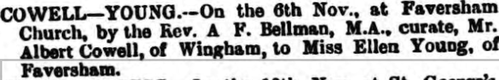

Albert Cowell cMay 1854 - c1922
[ Home ] | [ Calendar ] | [ Surnames Index ] | [ Family History ]An agricultural laborer and the child of William Cowell (a carter) and Hannah White, Albert Cowell, the first cousin three-times-removed on the mother's side of <a href="I1.html">Nigel Horne</a>, was born in Wingham, Kent, England <i>c.</i> May 1854<span class="citation">1</span>, was baptized there on Jul 23, 1854 and married Ellen Young (with whom he had 5 children: <a href="I1917.html">Jim</a>, <a href="I1916.html">Florrie Hannah</a>, <a href="I1915.html">Nellie Sarah</a>, <a href="I1913.html">Albert Thomas</a> and <a href="I1914.html">Annie Emily</a>, along with 2 surviving children) in Faversham, Kent, England on Nov 6, 1886<span class="citation">3</span>.</p><p>Albert spent all of his life in Kent, England. Throughout his life, he lived in several places around the county: at Chalk Pit in Wingham on Apr 7, 1861<span class="citation">5</span>; in Kingston in 1871; at Clements Row in Wingham on Apr 5, 1891<span class="citation">6</span>; at Adisham Street, Adisham on Mar 31, 1901<span class="citation">7</span>; and at Church Street, Nonington on Apr 2, 1911<span class="citation">8</span>. <p>He died <i>c.</i> Apr 1922 in Eastry, Kent<span class="citation">2</span> and was buried at St Mary The Virgin, Nonington, Kent on Apr 8, 1922<span class="citation">4</span>.
Parents
- William was born c. 1829
- Hannah D was born c. 1831
Children
- Jim was born c. 1881
- Albert Thomas was born c. May 1894
- Annie Emily was born on Feb 16, 1896
Citations
- England & Wales births 1837-2006 - Findmypast
- England & Wales deaths 1837-2007 - Findmypast
- England Marriages 1538-1973 - Findmypast
- Kent, Canterbury Archdeaconry burials 1538-1988 - Findmypast
- 1861 England, Wales & Scotland Census - Findmypast (was age 7 and the son of the head of the household)
- 1891 England, Wales & Scotland Census - Findmypast (was age 36 and the head of the household)
- 1901 England, Wales & Scotland Census - Findmypast (was age 46 and the head of the household Blind in one eye)
- 1911 Census for England & Wales - Findmypast (was age 56 and the head of the household)
Media
Canterbury Journal, Kentish Times and Farmers' Gazette 20 Nov 1886

England & Wales deaths 1837-2007 - BMD/D/1922/2/AZ/000186/140
Kent, Canterbury Archdeaconry burials 1538-1988 - GBPRS/CANT/D/95343964
England Marriages 1538-1973 - R_848611265
Kent, Canterbury Archdeaconry marriages 1538-1928 - GBPRS/CANT/M/97028993/1
England & Wales marriages 1837-2008 - BMD/M/1886/4/AZ/000070/187
England & Wales births 1837-2006 - BMD/B/1854/2/AG/000891/020
1891 England, Wales & Scotland Census - GBC/1891/0005927285
1911 Census for England & Wales - GBC/1911/RG14/04560/0013/1
1871 England, Wales & Scotland Census Transcription - GBC-1871-0014170194
England Marriages 1538-1973 - R_854022771
Family Tree

Generated by Ged2Site. Last updated on Jul 20, 2025